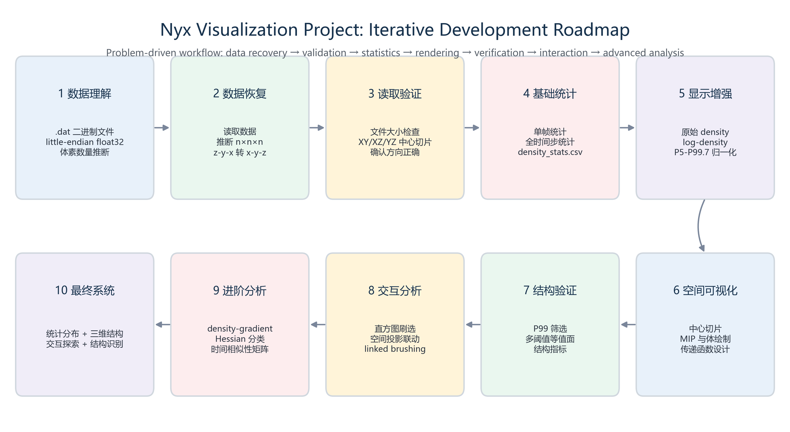
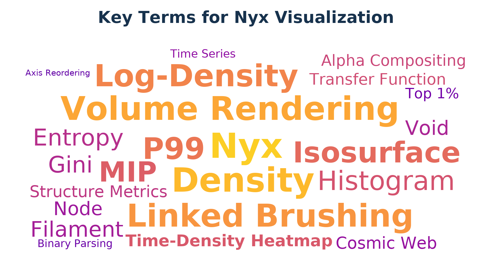
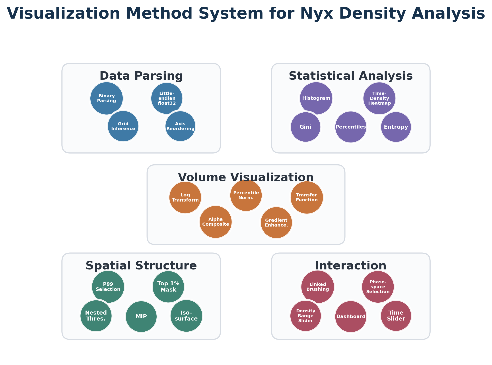

从无到有的实验路线

ChinaVis 2026 赛题 II · 科学可视化课程展示
本作品基于 Nyx 宇宙学模拟密度数据，围绕三维密度场随时间演化展开可视分析。系统通过体数据投影、密度直方图、 时间-密度热力图、统计曲线和密度区间联动刷选，展示宇宙密度从相对均匀到高低密度分化、丝状结构和节点逐渐显现的过程。
拖动时间步滑条可以观察宇宙密度场随时间变化；调整密度百分位区间可以筛选特定密度范围的体素； 当选择 99% 到 100% 区间时，系统将显示 top 1% 高密度体素在空间中的分布。


